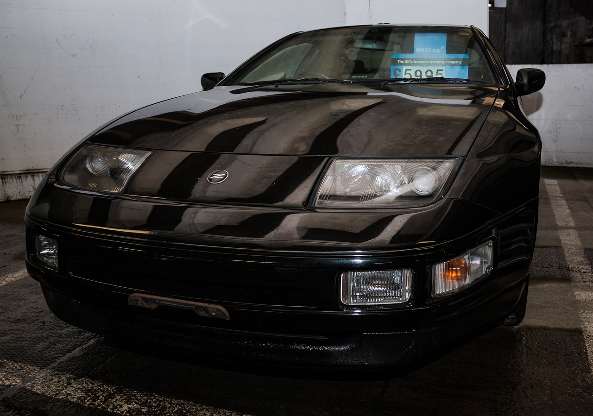

"Nissan 300ZX (Z32) 1989-2000"
The Nissan 300ZX was Nissan's Magnum Opus of engineering. Throughout it's development, it would become the first sports car ever designed with CAD (Computer-Assisted design), and because of such it had an extremely aerodynamic body shape. Paired with it's new VG30DETT, a twin turboed, quad cammed V6 capable of easily boasting 280HP in stock form. The Z32's major weakness was it's overly heavy weight. Coming in at 3500 lbs from the factory, most long term owners find turbochargers to be the perfect fix. *The car was originally planned to take the Supra's place in Fast and the Furious! It ended up being replaced when there weren't enough slick-top models produced.*
